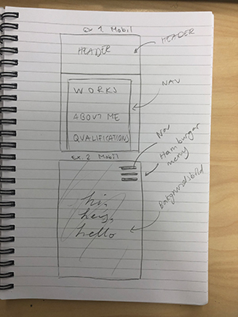
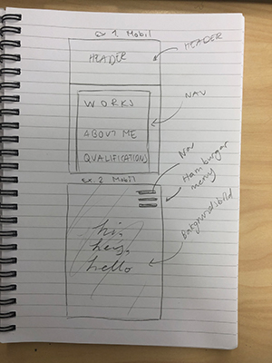
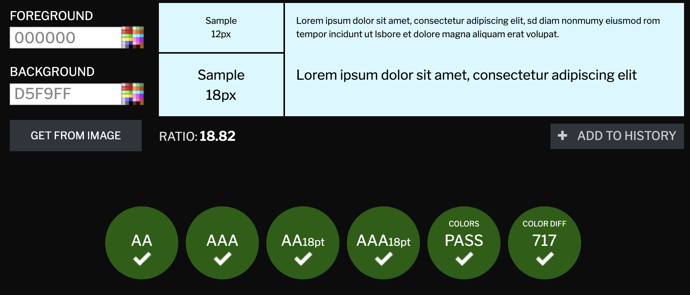
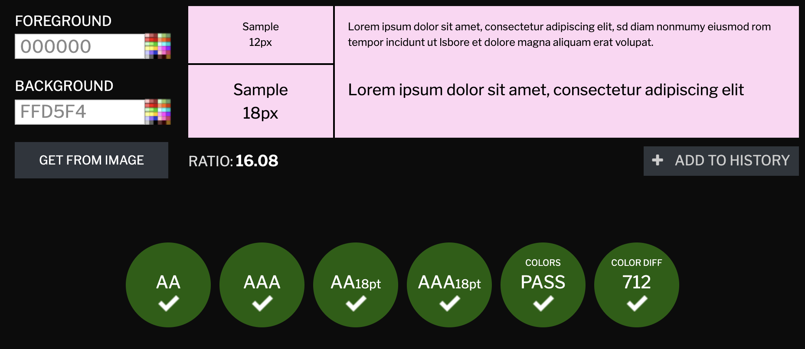

Dokumentation projekt Vt
INPUT-reflektion
Vilka svårigheter hade du i förra projektet?
Min främsta utmaning var att ändra storlek på bilderna som jag använde,
då dessa agerade som navigation på hemsidan.
Det var svårt att få de så att alla tre hade samma storlek och inte var för stora i filstorleken.
Att konvertera och ändra bilder bör vara enklare i detta projektet då jag lärt mig mer om det!
Vilka lärdomar drog du i förra projektet som du inte får glömma bort i detta?
Jag glömde att använda alt-attribut på mina bilder, vilket är en stor miss med tanke på att de
utgjorde en sån stor del av hemsidan.
Efter en påminnelse av att de bör finnas skall
jag komma ihåg att lägga in dem för att det skall vara tillgängligt för alla.
Jag får inte heller glömma bort att dokumentera min process så att jag lättare kan reflektera tillbaka på arbetet.
Även att jag ska samla allt i en och samma CSS-fil är någonting jag också lärt mig.
Det går snabbare och blev enklare att hitta, trots min skepsis till det.
Vilka ramar (förutsättningar, hinder, möjligheter) finns i detta projekt?
Med hjälp av tidigare projektet och med mer lärdom inom både webbutveckling och programmering har jag mer kött på benen än tidigare.
Jag har möjligheten till att utveckla min hemsida och skapa funktionalitet nu med hjälp av javascript,
så att hemsidan känns mer professionell.
Men att jag antagligen kommer att behöva använda javascript i projektet
gör det mer krångligt då risk för uppkommande problem ökar,
men det låter mig utveckla mina kunskaper inom utveckling av funktionella hemsidor.
Ifall jag har svårt med att lista ut någonting/vill lära mig mer har jag också tillgång till YouTube och Lynda för vägledning.
Vilka kunskaper har jag redan som jag kan använda mig av i detta projekt?
Med hjälp av kurser såsom gränsnittsdesign, estetisk kommunikation samt
webbutveckling har jag kunskaper inom layout och färgval.
På grund av detta känner jag mig bekväm
att skapa designen för hemsidan.
Mina baskunskaper ger mig också möjlighet att utveckla
mina idéer när de presenteras på hemsidan.
Vad kommer bli min utmaning denna gång?
Medan jag känner mig bekväm i att skapa den idéela designen blir programmeringen mindre bekvämt.
Trots att vi redan haft ett projekt finns det flera bitar kvar som skall falla på plats.
Med tillägget av ökad användning
av javascript kommer det göras krångligare för mig att sätta ihop allt, men det kommer gå bra.
Jag kommer även att behöva utöka mitt tänkande utanför boxen, vilket jag har lite svårt med då jag föredrar att "följa mallar".
1. Idébeskrivning
Min plan är att skapa en hemsida som agerar som portfolio/CV/blogg för mig.
På hemsidan skall man kunna läsa om mig som person, mina erfarenheter, ambitioner och mål, samt se mina verk och
idéer för framtida projekt. Då vi tidigare skapat CV med hjälp av webbutveckling och programmering kan jag möjligen använda
den för basidé till min nya sida, eller koppla den helt och hållet som en egen länk från huvudsidan. Min målgrupp
för detta projektet skulle jag säga är folk som kan vara intresserade av tankarna/idéerna/verken hos en aspirerande
digital designer, samt även för arbetsgivare i framtiden, och vid ansökning till högskola.
2. Planering
2.1 Handskiss
 

2.2 Schema
| Vecka | På lektionen | Utanför lektionen |
| 4 |
INPUT-reflektion & idébeskrivning
|
Skisser?
|
| 5 |
Skisser, vad behövs? Påbörja layout
|
Göra klart digital skiss?
|
| 6 |
Göra klart digiskiss, feedback, börja bygga grid.
|
|
| 7 |
Fylla på hemsidan med innehåll, (ikoner, bilder, mm).
|
|
| 8 |
Works-grid + flex
|
Fixa problem angående flex
|
| 9 |
Fixa problem angående flex och grid
|
|
| 10 |
Bygga upp mindre hemsidorna
|
Fixa med animationer och småting
|
| 11 |
Göra klart alla mindre hemsidor (delsidor), göra en kontaktsida? Mobile
|
Småpill, göra klart mobile och skalbarhet
|
| 12 |
Utvärdering och/eller göra klart mobile/skalbarhet ifall inte färdigt innan
|
Utvärdering
|
3. Dokumentation
Lektion vecka 4
Idag har jag gjort INPUT-reflektionsfrågorna som har besvarats häröver, samt skrivit en idébeskrivning för mitt projekt.
Utanför lektion eller under nästa skall jag göra mina skisser för projektet, fråga efter feedback så jag kan utveckla idén,
och även påbörja att bygga upp ett grid-system.
Lektion vecka 5
Idag gjorde jag mina skisser! Handskisserna började jag med och skissade ut en "rough layout" på hur jag hade kunnat tänka mig att det såg ut.
Dessa skisserna använde jag sedan när jag började skapa digitala, "finare" skisser/idéer likt hur jag gjorde i tidigare projektet.
Lite feedback fick jag från liknande gränssnitt via jämförelse samt när jag frågade om vissa saker borde ändras. Men mer feedback behövs
senare i projektet när hemsidan faktiskt skall byggas, så att den blir så bra som den kan bli.
Med hjälp av dessa digitala skisserna har jag tydligare syn på proportioner och hur jag senare kan bygga upp hemsidan i form av kolumner och grid.
Att göra klart de digitala skisserna är viktigt så jag får se vad som blir bäst (jag har inte bestämt mig för vilken design än),
men sen skall jag börja sortera hur sidan skall byggas (element-vis, ex. "detta är en nav, header", etc.).
Under tillämpad programmering har jag fortsatt utveckla på min digitala skiss samt påbörjat att skapa grid.
Lektion vecka 6
Jag har fixat ett grid-system som fungerar med hjälp av kolumner och rader som jag hoppas inte bör ändras senare.
Det var svårt eftersom det krånglade med live-servern, så när jag ändrat i mitt grid och css ändrades ingenting på hemsidan.
Med hjälp av position fixade jag även vart innehållet hamnade på hemsidan. Den börjar likna min digitala design mycket mer nu!
Jag fick även ändra om mina länkar från att ha varit individuella div-ar till att de ligger i samma. Tror dock att jag behöver ändra detta igen sen
eftersom länkarna kommer se annorlunda ut när man klickat vidare på dem (bold-text). Var tvungen att ändra då de istället för Att
ligga bredvid varandra så hamnade de över varann istället.
Under tillämpad programmering har jag försökt att fixa positionerna för alla elementen på hemsidan.
Jag var tvungen att använda position: relative och flytta vissa objekt då de annars gjorde hemsidans bredd/höjd större.
Däremot vet jag inte varför detta händer eftersom hemsidan är inställd på att ha en bestämd storlek på grund av box-sizing: border-box.
Förhoppningsvis lyckas jag lösa detta problemet senare. Jag hade även velat att mina element i headern följer kolumnernas riktlinjer,
eftersom de just nu inte gör det.
Lektion vecka 8
Jag har idag fixat min bakgrundsbild. Problemet var att jag tidigare skrivit "url('back2.png')" utan att jag angett vart bilden kan hittas.
Detta löste vi med hjälp av att backa i sökningen av bilden genom att skriva "url('../img/back2.png')". Den hade letat efter bilden i css-mappen,
men eftersom den inte låg där hittades den inte. Bakgrundsbilden var däremot alldeles för liten innan, så den förstorades vid exporteringen från Illustrator.
Förutom att fixa med bakgrundsbilden har jag försökt att bygga upp layouten för de andra sidorna, alltså "works", "about me" och "qualifications".
Dessa tre kommer att ha samma layout med olika innehåll, men detta innebär att jag endast behöver bygga upp ett grid för dessa tre.
Problem som förekom var att element såsom text och bilder inte ville lägga sig innanför föräldrar-elementets gränser.
Jag antog att det berodde på "position: relative", men även när jag tagit bort detta lade de sig istället på andra ställen. Jag kollade ifall det fanns
en marginal som ställde till det, men det hade den inte och eftersom jag redan från början bestämt att allt i CSS-filen från början skulle ha en
marginal på 0px. Efter rådgivning gav jag alla elementen som skulle ligga längst upp, alltså i min header, "display: flex" för att se om det
skulle lösa det. Trots detta ville den inte fungera när vi ville särskilja vart min nav skulle ligga i headern (åt höger), och slutade med att
vi använde "position: absolute" och "right: 5px", då den annars lade sig brevid loggan och texten. Hur detta ska lösas är oklart, men genom att
lägga en flex i en flex hade det nog fungerat, men det hade blivit mer komplicerat. Jag vill inte heller behålla "position:", eftersom skalningen
blir fel när man minskar hemsidan.
På den mera positiva sidan lade jag till en vit bakgrund med en opacitet på 70% på min main. Här skall jag lägga till mina verk så att de är fokuspunkten,
men så att bakgrundsbilden fortfarande syns igenom så att den inte försvinner. Det som tidigare varit en header och nav i min grid har i den nya containern
bytts ut mot mains, eftersom dessa passade mer angående vad innehållet kommer vara. Dessutom är det viktigt att det är något annat
då ifall jag annars läser in mitt header-innehåll där bilderna skall vara egentligen. Även fontbyte gjorde jag från de som finns i Visual Studio Code
till en Google Font. Den är en sans serif, så den är anpassad till skärm samtidigt som den är minimalistisk likt logotypen.
Nästa gång skall jag försöka lösa problemet angående flex och mina element, eftersom det krävs vid omskalning. Om det inte fungerar kanske jag
börjar om på nytt, med en ny grund. Jag är rädd för att det finns någonting i grunden jag byggt upp som påverkar resten av projektet,
och om det inte löses kommer det endast att skapa flera problem i framtiden när jag fortsätter bygga på hemsidan.
Lektion vecka 9
Jag fixade problemet idag genom att göra om min bas. När jag gjort en ny CSS-fil kopierade jag in saker i mindre tag från min första fil,
så att jag kunde lättare se vart problemen uppstod. Med hjälp av detta kunde jag hitta de problem som skapat osynliga margins, och kunde med tiden
byta ut mycket av mina användningar av "position: relative" med margin istället! Nu har jag strukturerat mina sidor med margin istället för det.
Det känns bättre så eftersom man inte "fuskar" i att tvinga objekt till en plats.
För de andra mindre sidorna (works, about och qualifications) har jag fixat deras grid och positionering av element som tidigare krånglade.
Jag la till articles, som senare mina bilder ska placeras inuti på sidan för "works", och så att texten blir tjockare när man håller över de olika sökvägarna.
Lektion vecka 10
Idag höll jag på med att fixa alla bilder som finns på "works"-sidan. Detta gjorde jag med hjälp av flex, som jag tidigare inte förstod skulle sitta på föräldern
när man ville ange vart och hur de olika elementen (bilderna) skulle positioneras gentemot varandra.
Dessa bilderna drog jag ner opaciteten på i deras "standardläge", så att de inte skulle ta för mycket uppmärksamhet.
Tanken är att ifall en besökare gillar en bild så skall hen ha möjlighet att hålla över bilden, vilket gör att den går från 50% till 100% i opacitet.
Detta implementerade jag med hjälp av :hover och opacity: 0.5; & opacity: 1;. En smådetalj som märktes var att man inte kan ange opaciteten med procent.
Man måste här använda sig av decimaltal, vilket var en ny lärdom.
Det som bilderna legat i tidigare har varit i själva "main", vilket jag idag bytte till att ligga inom en div inom main. Anledningen till detta var
att jag inte ville ändra på main-ens bestämningar, utan ville göra ändringar i storlek mm. på ett eget objekt som är den vita rektangeln.
Denna kunde jag sedan sätta många bestämningar på, såsom att det skulle vara ett flex-objekt, för att alla bilder skulle kunna positioneras fint.
Detsamma gjorde jag på "about me" sidan, som jag fyllde med en likadan vit div med som ett flex-objekt. Denna vita boxen håller nu både bilden på mig,
samt en till vit rektangel som innehåller texten OM mig. En div med text i en annan div helt enkelt. Alla dessa objekt var flex, vilket gjorde det enkelt att
få lika stort mellanrum mellan dem på den ytan de hade. Däremot ville de inte positioneras jämnt horisontellt, vilket gjorde att jag fick använda en padding
innanför den stora vita lådan, så att alla objekten började från samma plats. Jag gav profilbilden en width på 50% eftersom jag ville att bilden skulle ta upp
halva ytan innanför den vita div-en, och textrutan innanför div-en resterande 50%. Dock lade de sig då tätt intill varandra i "centrumet", vilket fixades med en
lika stor margin (1%) som paddingen för den stora div-en hade.
När jag ändrade storlek på bilden som var för stor märkte jag att jag inte kunde sätta en smalare width än vad bilden var för att den då blev förvrängd.
Detta problemet löste jag med hjälp av "object-fit: cover;", vilket liknar när man sätter en bakgrundsbild. På det sättet blev inte bilden förvrängd när jag satt
en width på 50%. Jag använde också "overflow: hidden;" så att den lilla biten som uteblev av profilbilden på grund av marginen på textrutan skulle försvinna, så att
båda delarna verkligen fick lika mycket yta. Däremot funderar jag på ifall bildens yta bör vara mindre, då den är mörkare än textrutan och väger mer visuellt.
Nästa gång jag arbetar, utanför eller under lektion, så skall jag få klart "sid-sidorna" och hur de är uppbyggda. Därefter blir det fokus på animationer.
Lektion vecka 11
Det som jag gjorde under denna lektionen var att bygga upp min sida för "qualifications". Detta innebar att jag byggde upp själva boxen där all information skulle ligga,
men också hur de skulle sorteras på hemsidan (i uppdelade kolumner) beroende på vilken typ av innehåll det var. För att göra detta skapade jag tre olika unordered lists.
Inom dessa listor skapade jag p-taggar för att kunna designa listans rubrik, för att tydliggöra vad respektive lista innehåller.
Med p-taggarna gav jag dem en underline så att de blev lättare att se, samt gjorde texten större. Det som jag gjorde denna gången var att göra allt till flex.
Flex krävs sen när jag kommer vilja göra detta skalbart, samt att måtten som används är t.ex procent eller vh/vw. Detta gjorde jag så att det skulle bli lättare sen
när jag skulle utveckla hur hemsidan såg ut för mobil.
Inför nästa lektion har jag mycket kvar att göra. Jag måste ju göra om det så att det är skalbart för alla sidor, bygga upp hur det ser ut för mobil samt skapa min
applicering av javascript, vilket jag tänkt göra i form av en hamburgarmeny eftersom layouten för min navigeringsbar på mobil inte annars blir bra. Texten för navigeringen,
hade blivit alldeles för liten ifall jag behöll den layouten, vilket hade gjort det svårt då området som tar en till en viss delsida hade varit rätt liten.
Hamburgarmenyn skall alltså göra det mindre plottrigt samt göra det enklare att trycka runt på hemsidan. Navigationen är inte alltid synlig, och fokuset hamnar på sidans innehåll.
Lektion vecka 12
Denna veckan har jag gjort en del. Först och främst började jag byta containers på delsidorna eftersom jag insåg att de skulle behöva olika layouts i mobilläge.
Att byta dessa innebar att jag också behövde kopiera de "inställningar" jag satt på huvudcontainern, så att jag inte förlorade den layouten som jag från början
anpassat till alla delsidor, verkar det som. Detta gjorde det svårare att navigera i mitt css-dokument, eftersom det började att fyllas på med inställningar
som var lite olika varandra. Jag ville att hemsidan skulle vara skalbar, och jag insåg att när man minskade fönstret så förminskades bland annat inte text på
min index-sida (huvud/förstasidan). På grund av detta fick jag ändra layouten och måtten en del, vilket tog mycket tid eftersom de olika delarna i mitt gridsystem
inte ville hamna rätt i relation till varandra med avstånd, utifrån vad jag önskade. Jag kunde inte heller använda mig av position: absolute, vilket fungerade i
laptop/dator-läge. När jag minskade fönstret så försvann därmed innehåll, och när jag använde mig av position: relative nådde det inte heller mina förväntningar.
När jag minskade fönstret så ökade avståndet mellan min navigeringsbar och namnet och bilden (headern). Tyvärr har jag inte kunnat lösa detta, men jag har en idé
om att det skulle teoretiskt sätt gå att lösa med javascript? Att man med hjälp av det kan få avståndet mellan dem kan minska/öka beroende på fönstrets bredd?
Som sagt anpassade jag min layout utefter hur bred en telefon är, vilket jag satte som mindre än 840px i bredd (ipads och sånt också kanske). Detta innebar en hel
del arbete i min css-fil, då jag fick klippa och klistra med alla "små-delar" såsom t.ex "header {.." eftersom det i en ny storlek (@media screen only and ()) nollställdes.
Detta tog en LÅNG TID. När jag blev klar med allt jag behövde fixa angående css i mobilläge skulle jag också implementera javascript i form av min hamburgarmeny.
Jag tog inspiration från den meny vi gjort i repl.it tidigare, vilket gjorde att jag sparade tid. Däremot fick jag ändra hur menyn skulle placeras på hemsidan,
eftersom flex-inställningen och "justify-content: flex-end" inte fungerade. Därför anpassade jag mig med hjälp av position: relative, där jag valde att den
skulle vara en ett visst avstånd ifrån övre högerkanten med hjälp av right: x%.
4. Testning

Mina tester för kontrast var att jag testade fontfärgen (svart) mot de mest vanligt förekommande färgerna i bakgrunden, vilket var ljusblått och ljusrosa.
Enligt contrastchecker så fungerade kombinationen bra och passerade alla testen.
Chrome:


Safari:


iPhone 8:


Det skiljer sig på det sätten att på desktop, när man drar ihop fönstret, så ser det ut som att hamburgarmenyn är en bit ifrån högerkanten. På telefonen syns detta
däremot inte, vilket var det jag utgick ifrån. När man istället på datorn hade det så att det inte fanns ett mellanrum så försvann en bit av menyn på telefonen.
På grund av detta prioriterade jag att det skulle vara utan mellanrum på telefonen, eftersom man sällan drar ihop ett fönster så mycket på en dator och därmed sällan
ser det. Även som en skillnad mellan Safari (både på dator och telefon) så vill inte mittenstrecket från hamburgarmenyn försvinna när den blir klickad på.
Anledningen till detta vet jag inte, eftersom javascriptet fungerar på allt förutom just det sträcket där dess opacitet går ner till noll. Min gissning är att hur man
anger opacitet i CSS i Safari är annorlunda från hur det är i Chrome. Men ja, detta ledde till att istället för att få ett kryss efter att ha öppnat menyn, inuti Safari,
så får man en stjärna. Blev ändå fint :) Resten av allting var mycket likt, antagligen eftersom de följer ungefär samma regler angående CSS och att jag använt skalbara mått.
Eftersom jag angett koden att följa viss mängd pixelbredd och inte olika sökmotorer (vilket jag inte vet ifall det går), så spelar det ingen roll vilken sökmotor som används.
5. Utvärdering
Dåligt
Det som var sämre i mitt arbete var främst att jag överestimerade mängden saker jag kunde få gjort under tiden vi fått. På grund av detta blev schemat ganska tajt,
och det blev väldigt stressigt i mitt egna huvud samt att få saker att fungera på hemsidan. Det var många småsaker som tog lång tid, t.ex att jag implementerade flex mitt i
arbetet. Detta snurrade till det eftersom mycket placerades då fel (en selektor som finns på flera av sidorna var flex = den inte passade som "flex" på en av dem).
Jag fick därför byta selektorer och specifiera dem, då flex annars hade hjälpt lite (för att få en fin skalbarhet med positionerade objekt) men skapat fler problem.
Som konsekvens av tillägget av flex så hamnade objekt fel, och jag fick antingen byta selektornamn, ändra i min designplan eller lägga till margins/paddings för att hålla
sakerna på den plats jag planerat. Däremot var det svårt att lägga till en margin eftersom den också var tvungen att vara skalbar. Trotsa att jag har ett bättre ögonmått
när man mäter i pixlar så kunde jag inte använda detta som ett mått, eftersom en pixelmängd har en viss storlek på en enhet och en annan på en annan enhet. T.ex ifall jag placerade
någonting med en margin så att den på datorn nådde övre högerhörn fint, men på en telefon sitter denna sak i mitten på skärmen. Som resultat fick jag därmed ändra mina pixelmått
till skalbara mått som anpassar sig efter enhetens skärm med hjälp av "%".
Min tanke angående detta är att just ett enda litet problem, alltså tillägg av flex, påverkade stora delar av mitt tidsupplägg. Jag föll snabbt efter i min tidsplanering och stressade.
Jag visste att detta var ett problem jag var tvungen att klara mig igenom. Eftersom det handlade om basstrukturen på min/mina hemsidor kunde jag därför inte fortsätta med annat innehåll
då jag på detta vis hade kanske skapat fler problem som hade gjort lösningen av flex-problemet svårare. Jag fick inte tid till att skapa en femte hemsida, som jag från början hade
velat ha med på grund av för lite tid. Däremot låg ett annat problem i att jag tog för mycket tid åt att planera hemsidan, både på papper och digitalt för att få en bild över
hur den skulle se ut samt skapade en bakgrund i Illustrator som tog tid att göra. Dock gjordes detta innan mitt problem med flex kom upp. Visst, jag kunde inte veta att jag skulle
få sådana problem senare i arbetet, men någonting jag hade kunnat göra är att inkludera en budget-lektion i mitt schema. Detta är någonting som hade hjälpt med mitt tidsproblem,
hade också kunnat vara att minska tiden jag lade åt planeringen till en lektion max, då jag inte bara annars slösar tid utan också skapar en idé av någonting jag med min kunskap inte
har möjlighet att skapa ännu. Någonting annat som jag skall ta med mig till ett framtida hemsidobygge är att definitivt inkludera flex från början. Antalet problem som uppstod av att
inte gjorde detta har gett mig en rejäl läxa. Dessutom hade jag kunnat spenderat mer tid hemma på att försöka få ihop min hemsida.
Jag hade också velat implementera mer JavaScript i mitt projekt, men trots att jag ville det hade jag inte inkluderat det i mitt schema. Allt JavaScriptsarbete hamnade därför utanför skoltid.
Ett generellt tajtare schema med mycket mer som skall göras under varje lektion hade varit en generell förbättring. Däremot är det inte möjligt att arbeta på den konstant, så det behövs
en balans mellan hur mycket som skall göras för ett schema som man klarar samtidigt som det är bra i relation med deadlinen. Någonting som jag hade kunnat göra är att bygga upp en
projektplansmall. Alltså att jag gör en lista på det som jag behöver bestämma/göra i vilken ordning. T.ex steg 1: Skissa ihop en idé, dokumentera, bestäm grid/flex eller båda, bygg grid/flex.
Steg 2: bygg upp basstruktur.. mm. Detta hade minskat min konstanta förvirring, trots mitt schema, i vad jag specifikt skulle göra. Jag hade alltid en "vague" idé om vad jag höll på med
som hjälp av schemat vi gjort, men jag behövde ändå försöka planera mitt i arbetet för att jag specifikt inte visst vad jag gjorde/skulle göra. En mall hade därför hjälpt mig alltid veta vad
som skall göras just då. Är jag klar med allt i steg 1? Dags att gå över till steg 2.
Specifikt för innehållsförbättring så finner jag det irriterande att i safari webbläsaren så vill inte mittenlinjen i hamburgarmenyn försvinna. Jag vet inte om det har med att göra att
safari har andra regler angående JavaScript, men jag tycker det är konstigt eftersom de andra linjerna fungerar som de ska och att hela scriptet fungerar i andra webbläsare.
Min tanke är i alla fall att jag behöver kanske läsa på lite i vilka regler som fungerar i vilka webbläsare, men detta skulle ta väldigt lång tid och kan nog inte memoreras genom endast läsning.
För att förstå måste jag också sätta detta i praktik också, men det skulle också ta lång tid innan det "sitter". Linjen är i vilket fall ett litet problem jag skulle viljat fixa, men jag
vet inte hur. En annan sak med hamburgarmenyn är att på datorn så är den inte placerad längst högerkanten, utan sitter en bit ut. Jag förstår inte heller varför det är så. Jag försökte fixa det
med flex, justify-content osv, men det såg alltid fel ut på telefonen om det såg rätt ut på datorn vise versa. Jag kunde inte använda position: relative heller, då den då permanent var placerad
på det stället jag satt den på = ingen skalbarhet ifall jag inte vill förlora menyn. Därför prioriterade jag att menyn såg bra ut på telefonen, eftersom hamburgarmenyn är menad att visas i just
den storleken och inte tekniskt sätt för datorns layout. Min gissning är att ifall jag också hade haft bättre koll på min flex på hemsidan så hade detta gått bättre. Jag hade nog lättare kunnat
hitta vad som stod fel till, eftersom jag efter att ha lagt till flex inte riktigt visste VAD som var flex-objekt och inte. Ett annat problem jag också tror ligger i min "flex-miss" är mina
sociala medier ikoner. Under ett flertal tillfällen har jag sett att de placeras fel ifall jag startar om hemsidan, alltså att deras flex-regler (att vara centrerade) inte fungerar
Ibland fungerar den och de hamnar korrekt. Men ibland gör de inte det och sprids ut på ett ologiskt sätt. Min gissning här är att jag av misstag angett en regel till någon selektor som
är kopplade till ikonerna (img, a eller nåt id/class), som får hemsidan att reagera konstigt. Någonting jag då hade kunnat göra i framtiden är därför att dubbelkolla allt i CSS-filen
och hålla koll på flex såklart.
Bra
Det som jag tyckte jag gjorde bra var att jag bland annat hade spenderat en stor del av min tid på att skissa och planera eftersom jag på grund av det hade en väldigt tydlig bild över vad jag
skulle skapa. Jag kunde lätt tänka mig efter att ha en tydlig BILD över resultatet vad som skulle krävas i koden för att få det som jag ville (minus flex hehe). Jag faller ofta in i en grop
när jag inte har en tydlig bild/idé av vad jag skall göra och det tar därför mycket längre tid att nå mitt resultat. Därför kändes det bra både i arbetet samt i mitt egna huvud att inte känna
stress över att jag inte riktigt visste vad jag höll på med eller vad jag skulle göra (däremot var det ju lite så ändå pga för lite detaljplanering, men det förbättrade det).
Trots att flex-problemet har lett till mycket extra arbete som jag lagt blod, svett och tårar på (kanske inte blod men men), så har det inte bara varit ont. Jag har ju till följd av problemet
lärt mig mycket om t.ex vilka konsekvenser som man kan få ifall man väljer att ändra på någonting så stort en bit in i projektet. Dessutom har jag lärt mig mer och känner mig mycket säkrare
inom hanteringen av flex, då jag under problemen fått testa och se vad som fugnerar och inte. Jag fick kolla på många tutorials för vägledning, eller för att få ett hum om vad jag skulle kunna testa
vilket har vidgat mina kunskaper inom denna del i webbutveckling. Innan projektet kände jag mig inte särskilt säker inom flex alls, och ville hellre arbeta med grid som vi gjort i projekt1.
Men i detta projektet fick jag testa på att använda både grid OCH flex samtidigt. Tekniskt sätt hade det kanske varit bättre och mindre frustrerande ifall jag gjort hemsidan med endast flex,
men jag tror att de fördelar jag fick med att använda grid samtidigt var användbart och smart i detta projektet eftersom jag hade många småsaker jag ville placera rätt.
Att ha grid-et som en linjeguide (som jag t.ex kunde använda för att ett objekt alltid ska hålla ett visst avstånd till med hjälp av flex) har definitivt gjort det enklare i att placera saker korrekt.
Däremot var det också mycket svårare av anledningen att jag inte alltid höll koll på vilka objekt som låg i vilket element (ex. en div i headern) och därför inte visste vilka mått flex-en gick utifrån.
Någonting annat jag tyckte om i mitt arbete och är nöjd över är att jag lyckades dokumentera varenda lektion. Det må låta lite löjligt, men som en mästerprokrastinerare var jag rädd för att jag
skulle skjuta upp dokumenteringen. Men jag tog lärdomen jag fick från förra projektet (när jag inte visste att vi ens skulle dokumentera) och gjorde det ändå. När jag skrev utvärderingen i projekt1
kom jag inte ihåg mycket av det jag gjort, och fick hjälp av att jag kommit ihåg vad jag gjort under lektionerna med hjälp av mina "pushar" till GitHub. Hade jag inte pushat hade jag inte vetat
vad jag skulle skrivit på min dokumentation. Jag ville inte gå igenom samma sak igen, alltså att gå igenom varje push för att sen komma ihåg någonting från flera veckor sedan.
Det var inte bara dumt att behöva tänka tillbaka, utan jag dessutom skrev inte mycket i mina dokumentationer eftersom jag inte kunde komma ihåg allt och alla detaljer från den tiden.
Så på grund av detta valde jag då att dokumentera varje lektion samma dag som vi haft lektion, för att inte glömma vad jag gjort i projektet.
Sist av allt tycker jag om min slutprodukt. Den är långt ifrån perfekt med mycket småsaker (och även större) som säkerligen hade kunnat förbättras. Men vid slutet på dagen har jag ändå gjort den,
och den är relativt lik min skiss jag haft från början. Det är en hemsida jag velat skapa ett tag, så nu har jag i alla fall en bas jag kan bygga utifrån ifall jag skulle vilja förbättra den.
Jag har lärt mig mycket under projektets gång, tycker jag. Så jag avslutar inte bara kursen med en hemsida jag är nöjd med, utan också en hel del ny kunskap inom ämnet! :D